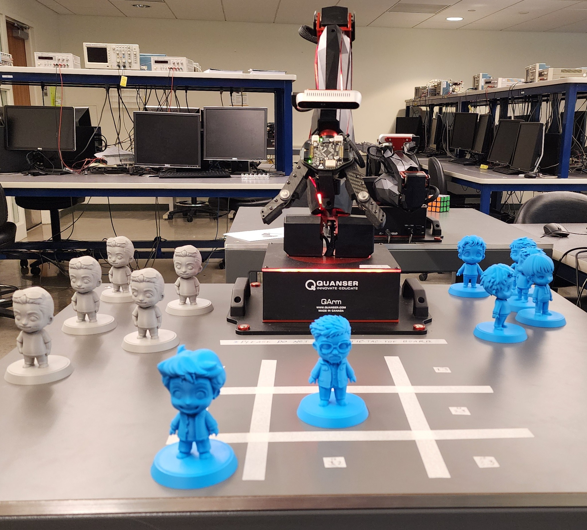
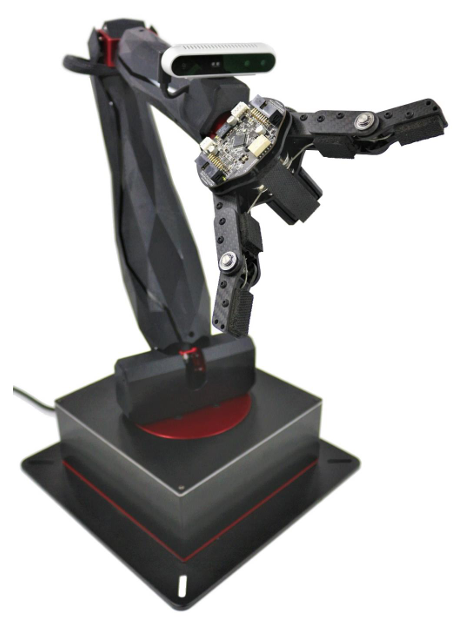
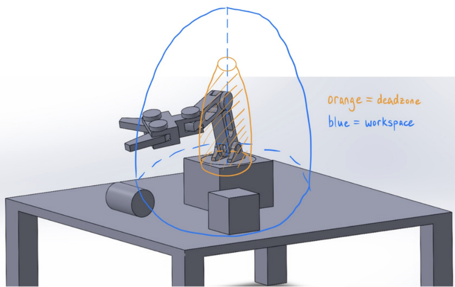
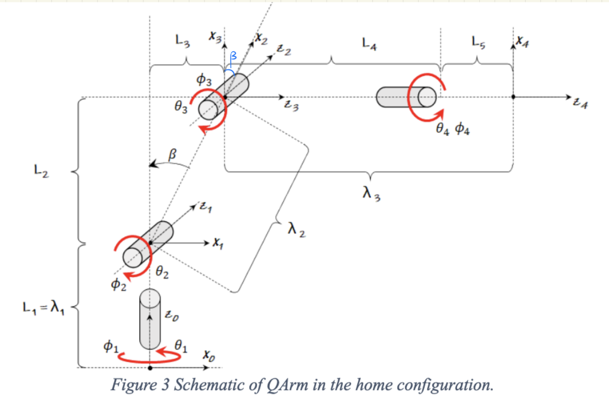
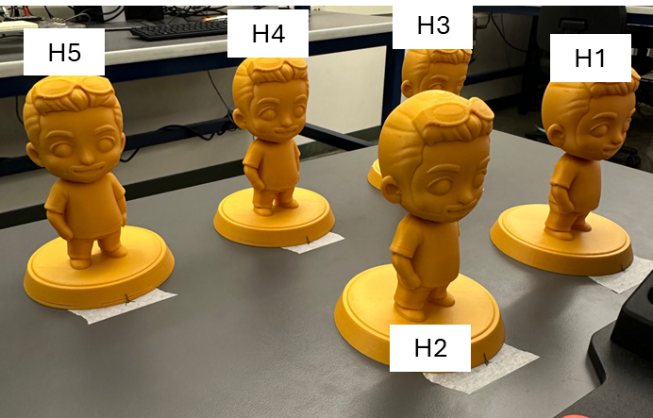
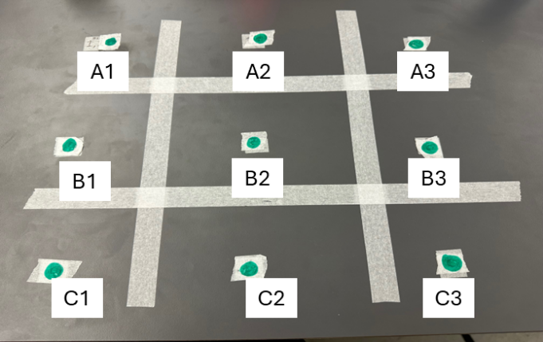
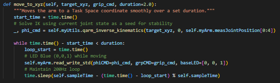
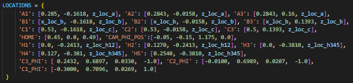

Robot and board setup with custom character tokens.

Quanser QArm platform.

Workspace and deadzone sketch.

QArm symbolic schematic.

Token staging area before gameplay.

Labeled tic-tac-toe board coordinates.

Move function used to command the arm.

Stored coordinate dictionary for tokens and board cells.

Contour detection results.

Centroid detection results.

Depth feed colormap from the RealSense sensor.

Additional project image from the earlier site build.